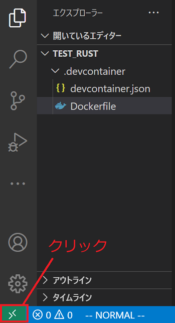
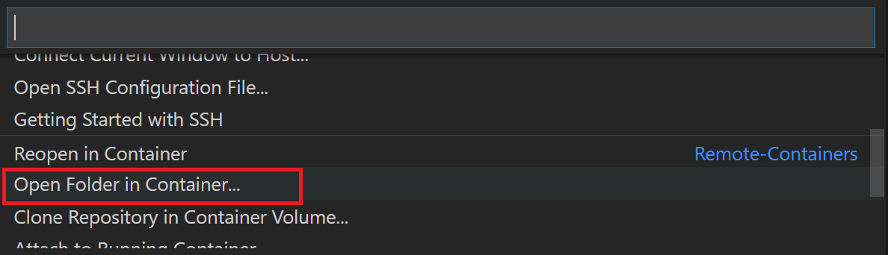

VSCode上でDockerを使ってRustの開発環境を構築
今回、ふと Rust が使いたくなり、開発環境を構築しようと思い立った。
(前 は、WSL に Rust をインストールした…が、もうアンインストールした)
ちょっと使いたいだけなので、Rust をインストールするのもめんどくさい…
そこで、VSCoder 上で Docker を使ったお手軽 Rust 開発環境を構築した時のやり方をメモ。
環境
- Windows10 21H1
- WSL2
- Ubuntu 20 を使用
- Docker Desktop v3.4.0
- VSCode v1.57.1
- 拡張機能: Remote - Containers v0.183.0
構築方法
- Docker Desktop を起動した状態にする。
- Windows上に開発用フォルダを作成
- VSCode で、上記で作成した開発用フォルダを開く
-
Ctrl+Shift+Pまたは、F1を押し、コマンドからRemote-Containers: Add Development Container Configuration Files...
を選択。
-
使用する言語の選択を、Rust とする。
-
選択後、
.devcontainerフォルダが作成される。
そのディレクト内には、devcontainer.jsonDockerfile
がある。
とりあえず、特に作成されたファイルを編集することなく動かせる状態となっているらしく、今はなにもしない。 -
VSCode の赤枠で囲っている緑のボタンをクリック
 - VSCode の上部でコマンドが選択できるので、
Remote-Containersのカテゴリにある `Open Folder in Container...' を選択。
 - フォルダを選択するダイアログが表示されるので、
.devcontainerがあるフォルダを選択。 - 環境構築が始まるので、終わるまで待つ。
- 環境構築が完了すると、
"workspace/開発用フォルダ名"フォルダが開いている状態となる。 - VSCode のターミナルを開くと、
"workspace/開発用フォルダ名"がルートとなっており、これで開発を始めることができるようになった。